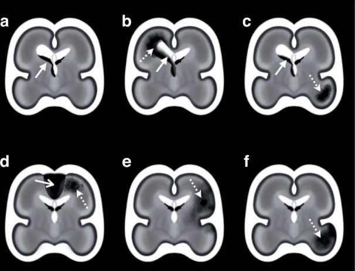
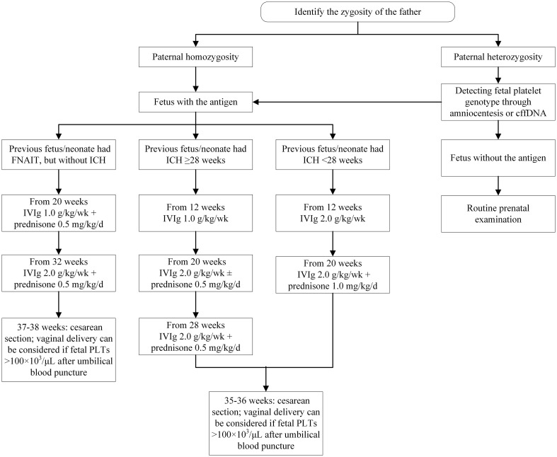
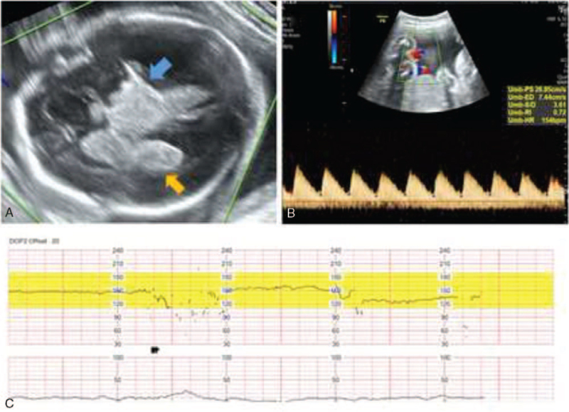

3115 — Giảm tiểu cầu thai miễn dịch (NAIT/FNAIT): xuất huyết nội sọ thai nhi và ngưỡng truyền tiểu cầu / Fetal and neonatal alloimmune thrombocytopenia with fetal intracranial hemorrhage
Tags: pattern:xuat-huyet-noi-so-thai pattern:gian-nao-that pattern:o-tang-am-nao-thai pattern:giam-tieu-cau vung:thai vung:nao vung:buong-oi protocol:sieu-am-thai protocol:MRI-thai protocol:doppler-MCA-PSV score:nguong-tieu-cau
Mức chắc chắn (certainty): tổng hợp y văn (literature synthesis) — số liệu lấy từ một cập nhật tổng quan 2025 về chẩn đoán–điều trị FNAIT (PMC12517676, Transfusion Medicine and Hemotherapy, CC BY-NC), một đồng thuận phân loại xuất huyết nội sọ thai nhi (PMC12602359, Pediatric Research 2025, CC BY 4.0), một phác đồ điều trị theo nguy cơ (PMC13079021, Front Immunol 2026, CC BY 4.0) và một ca nguyên văn siêu âm thai (PMC8735806, Medicine 2022, CC BY 4.0). Không có thử nghiệm ngẫu nhiên nào về ngưỡng truyền tiểu cầu của thai; mọi ngưỡng đều từ ý kiến chuyên gia/đồng thuận, đã ghi rõ.
Câu chốt: FNAIT là nguyên nhân giảm tiểu cầu nặng phổ biến nhất ở trẻ sơ sinh khỏe mạnh — 1:2.500 trẻ sinh sống — nhưng không có xét nghiệm không xâm lấn nào đo được tiểu cầu thai. Ba con số quyết định: (1) xuất huyết nội sọ (ICH) xảy ra ở 10–25% ca giảm tiểu cầu nặng (< 50 × 10⁹/L) và 60–75% ICH thai xuất hiện ngay trong thai kỳ đầu, bắt đầu từ khoảng 18 tuần; (2) ở thai không chọn lọc, ICH do FNAIT chỉ chiếm ~2,9% — nguyên nhân hàng đầu là di truyền (COL4A1/COL4A2 19%, đột biến de novo 70%); (3) chẩn đoán hình ảnh không định lượng được tiểu cầu: MCA-PSV đánh giá thiếu máu, không đánh giá tiểu cầu — dùng nó để quyết định truyền tiểu cầu là sai nguyên lý.
1. Tổng quan bệnh học – cơ chế hình ảnh (TẠI SAO)
1.1 Sinh bệnh: kháng thể mẹ đánh vào tiểu cầu thai
- Mẹ đồng hợp alen hiếm HPA-1bb (kiểu hình ~2% người da trắng) sinh kháng thể anti-HPA-1a; thai nhận HPA-1a từ bố nên luôn dị hợp HPA-1ab → kháng thể IgG mẹ qua FcRn ở nguyên bào nuôi vào tuần hoàn thai.
- Vì sao IgG vào được từ rất sớm: vận chuyển IgG khởi đầu từ tuần 13, đạt 50% nồng độ mẹ ở 28–32 tuần, rồi tăng dốc sau 36 tuần. Hệ quả lâm sàng: thai kỳ đầu vẫn có thể xuất huyết vì đỉnh kháng thể đến muộn nhưng quá trình hủy tiểu cầu đã bắt đầu từ tam cá nguyệt II.
- Cơ chế xuất huyết: kháng thể gây hủy tiểu cầu + ức chế sinh tiểu cầu (giảm megakaryocyte) → tiểu cầu < 50 × 10⁹/L; mầm mạch dưới màng nội tủy (germinal matrix) ở thai 18–32 tuần là mạng mạch mỏng, thành chỉ một lớp nội mô, thiếu lớp cơ → vỡ khi huyết áp dao động (co thắt tử cung, chuyển dạ, thủ thuật).
- Vì sao tổn thương hay ở mầm mạch/nội thất và dưới vỏ: đó là nơi mao mạch non nhất, áp lực mao mạch cao nhất và không có đệm mô đệm; xuất huyết lan vào não thất → não úng thủy sau xuất huyết, hoặc vào nhu mô → ổ khuyết/porencephaly.
1.2 Cơ chế hình ảnh: đọc được "tuổi" của máu
- Siêu âm: cục máu tươi tăng âm (mặt phân cách âm mạnh giữa huyết khối fibrin và dịch não tủy); sau 1–2 tuần trung tâm giảm âm rồi thành nang (dịch trong); não thất giãn là dấu gián tiếp, xuất hiện muộn.
- Vì sao MRI hơn siêu âm: MRI nhạy hơn với máu mới (< 6 giờ), máu ngoài não (dưới màng cứng, dưới nhện), và tổn thương hố sau (tiểu não) — những vùng siêu âm thai khó tiếp cận (PMC12517676).
- T1/T2 theo tuổi máu: tối cấp–cấp → T1 đồng tín hiệu, T2 giảm mạnh (deoxyhemoglobin); bán cấp → T1 tăng (methemoglobin), T2 giảm rồi tăng; mạn → T2/SWI giảm do hemosiderin* (viền giảm tín hiệu tồn tại nhiều năm). Trên thực tế, T1 tăng là chuỗi xung "nhìn thấy máu" tốt nhất trên MRI thai.
- Ngưỡng hình ảnh cần đo: sừng chẩm não thất bên ≥ 10 mm = giãn não thất; đo chiều dày vỏ não, bể lớn, tiểu não vì ICH hố sau làm giảm sản tiểu não; không có ngưỡng kích thước ổ máu quyết định điều trị — quyết định dựa vào vị trí + tiến triển + tình trạng thai.
1.3 Dịch tễ và các con số nền
| Chỉ số | Số liệu | Nguồn |
|---|---|---|
| Đồng miễn dịch anti-HPA-1a | 200/100.000 thai kỳ (1:500) | PMC12517676 |
| Giảm tiểu cầu nặng (< 50 × 10⁹/L) ở trẻ sơ sinh không chọn lọc | 150/100.000 (1:666); FNAIT chiếm 27% → ~40/100.000 (1:2.500) | PMC12517676 |
| FNAIT có ICH | 10/100.000 trẻ sinh sống (1:10.000) | PMC12517676 |
| ICH trong ca giảm tiểu cầu nặng | 10–25% | PMC12517676 |
| Thai kỳ đầu | 40–60% ca FNAIT có triệu chứng khởi phát ở thai kỳ đầu; 60–75% ICH thai xảy ra ở thai kỳ đầu, từ ~18 tuần | PMC12517676 |
| Kháng thể thường gặp (da trắng) | anti-HPA-1a 75–80%; anti-HPA-5b 10–15%; người Nhật: anti-HPA-4b | PMC12517676 |
| Yếu tố nguy cơ di truyền | HLA-DRB3*01:01: PPV 26,9%, NPV 98,3%; 99/101 mẹ FNAIT có triệu chứng dương tính; 64/64 ca giảm tiểu cầu nặng và 3/3 ca ICH nằm trong nhóm dương tính | PMC12517676 |
| Tần suất ICH thai nói chung | 0,1–1/1.000 thai kỳ; tỷ lệ mắc khi sinh 0,17–0,35/1.000 trẻ sinh sống | PMC12602359 |
| Nguyên nhân ICH thai (đoàn hệ Pháp 194 ca) | COL4A1/COL4A2 19% (de novo 70%); MPL/MECOM 2 gia đình; exome thêm 8% | PMC12517676 |
| ICH "tình cờ" ở thai không chọn lọc | Giảm tiểu cầu nặng chỉ gây 8,5%; kháng thể kháng tiểu cầu 2,9% (sổ Thụy Điển) | PMC12517676 |
2. Mẫu hình + chẩn đoán phân biệt theo vị trí (Gamut)
- Mầm mạch – nội thất (GMH-IVH): ổ tăng âm ở đáy não thất/cađô-đồi thị, có thể lấp đầy não thất; giãn não thất xuất hiện sau 1–3 tuần; hay gặp ở thai 18–32 tuần và ở thai thiếu tiểu cầu.
- Nhồi máu tĩnh mạch quanh não thất (PVHI): ổ nhu mô quanh não thất đi kèm IVH, lan theo vùng dẫn lưu tĩnh mạch, tiên lượng xấu hơn IVH đơn thuần.
- Xuất huyết nhu mô nguyên phát (IPH) không thông với não thất: ổ trong nhu mô, thường thùy não; phân biệt nhồi máu tĩnh mạch (kèm huyết khối xoang) với biến chứng xuất huyết của nhồi máu động mạch (FAIS) và IPH vô căn (FHS) — phân loại đồng thuận 2025 (PMC12602359, Fig. 1–2).
- Dưới màng cứng/dưới nhện/dưới màng mềm: máu ngoài nhu mô, dễ bỏ sót trên siêu âm; MRI nhạy hơn — đặc biệt dưới màng cứng hố sau và dưới màng mềm (dấu "âm dương").
- Tiểu não: ổ máu/giảm sản tiểu não — nguyên nhân hay gặp là parvovirus B19 và FNAIT, ít gặp nguyên nhân di truyền (PMC12602359).
- Gamut "giãn não thất thai nhi + ổ tăng âm trong não thất": FNAIT · nhiễm CMV/parvovirus B19 · COL4A1/COL4A2 · huyết khối xoang/tĩnh mạch tủy sâu · rối loạn đông máu (yếu tố X, von Willebrand, MPL gây giảm tiểu cầu bẩm sinh) · chấn thương mẹ · dị dạng mạch (VGAM).
- Gamut "thai phù/thiếu máu + ổ máu nội sọ": FNAIT (không gây thiếu máu điển hình — khác HDN) · parvovirus B19 · truyền máu trong tử cung trước đó · huyết khối tĩnh mạch (bài 1965).
3. Ma trận đối chiếu (Chốt vào / Chốt loại)
| Thực thể | Hình ảnh điển hình | Chốt vào (rule-in) | Chốt loại (rule-out) | Gợi ý xác nhận |
|---|---|---|---|---|
| FNAIT có ICH | Ổ tăng âm mầm mạch/nội thất ± giãn não thất; T1 tăng khi máu bán cấp; thai khỏe, mẹ khỏe | Tiểu cầu mẹ/thai < 50 × 10⁹/L + kháng thể anti-HPA (anti-HPA-1a) + ICH không giải thích được | Không có kháng thể anti-HPA và tiểu cầu bình thường → không phải FNAIT | HPA genotyping mẹ–bố–thai; cfDNA từ 12 tuần |
| Nhiễm CMV bẩm sinh | Vôi hóa quanh não thất, nang dưới màng nội tủy, giãn não thất, chậm phát triển | Vôi hóa + nang + giãn não thất, không có ổ máu tươi | Chỉ có ổ máu đơn thuần, không vôi hóa/nang → ít nghĩ CMV | PCR CMV nước tiểu/máu sau sinh; MRI thai |
| Đột biến COL4A1/COL4A2 | ICH tái phát nhiều ổ, porencephaly, hội chứng HANAC ở người lớn trong gia đình | Tiền sử gia đình đột quỵ/porencephaly + nhiều ổ máu ở các lần siêu âm khác nhau | Một ổ máu đơn độc, không tiền sử gia đình → ít nghĩ | Exome/panel; tư vấn di truyền (de novo 70%) |
| Nhồi máu động mạch thai (FAIS) | Ổ theo lãnh thổ động mạch, thường một bên, có thể xuất huyết chuyển dạng | Hình nêm theo lãnh thổ MCA + hạn chế khuếch tán | Tổn thương hai bên mầm mạch → nghĩ xuất huyết, không phải nhồi máu | MRI thai (DWI/EPI) + siêu âm Doppler |
| Giảm tiểu cầu bẩm sinh do MPL/MECOM | ICH giống hệt FNAIT, nhưng không có kháng thể | Tiểu cầu thấp kéo dài sau sinh, không đáp ứng truyền tiểu cầu, không có anti-HPA | Có anti-HPA + đáp ứng truyền → FNAIT | Panel gen tiểu cầu; huyết học nhi |
| Huyết khối xoang tĩnh mạch thai | Mất tín hiệu dòng xoang trên MRV; tổn thương đồi thị hai bên | Huyết khối trong lòng xoang + tổn thương đồi thị hai bên | Không có huyết khối, chỉ có máu mầm mạch → không phải | MRV/MRI thai (bài 1965) |

*Sơ đồ giải phẫu (~25 tuần): (a) GMH-IVH đơn độc; (b) IVH + nhồi máu xuất huyết quanh não thất (PVHI); (c) IVH + ổ nhu mô riêng; (d) IPH kèm huyết khối xoang màng não (CSVT); (e) IPH theo lãnh thổ động mạch (nhồi máu động mạch có chuyển dạng xuất huyết); (f) IPH vô căn. Nguồn: Pediatric Research 2025, PMC12602359, Fig. 1, CC BY 4.0.*4. Protocol chụp + ngưỡng xử trí
4.1 Siêu âm thai — công cụ duy nhất phổ quát, nhưng phải đúng lịch
- Lịch: siêu âm hình thái tam cá nguyệt I → 18–22 tuần (đo sừng chẩm não thất, xem mầm mạch, tiểu não, bể lớn) → với thai có nguy cơ FNAIT: lặp mỗi 4 tuần, nguy cơ cao mỗi 2 tuần (đề xuất trong PMC12517676 — chưa có khuyến cáo chính thức, ghi rõ là gợi ý).
- Ngưỡng đo: sừng chẩm ≥ 10 mm = giãn não thất; ≥ 12 mm = nặng; đo cả hai bên vì tổn thương có thể một bên. Với nghi xuất huyết: đo đường kính ổ máu 3 chiều, độ dày vỏ não, đường kính tiểu não (giảm sản sau xuất huyết hố sau).
- Doppler: MCA-PSV dùng cho thiếu máu (ngưỡng > 1,5 MoM, xem bài 1673/1961) — KHÔNG dùng để ước lượng tiểu cầu; không có phương pháp không xâm lấn nào đo tiểu cầu thai (PMC12517676).
4.2 MRI thai — khi siêu âm mờ hoặc cần tiên lượng
- Chỉ định: siêu âm nghi ICH nhưng không rõ vị trí/mức, cần đánh giá hố sau, dưới màng cứng, tổn thương vỏ–chất trắng, hoặc tư vấn tiên lượng.
- Chuỗi xung: SSFSE/HASTE T2 (giải phẫu), T1 (máu bán cấp), EPI/T2/SWI* (hemosiderin, máu mới), DWI/EPI (nhồi máu); từ 18–20 tuần trở đi mới đủ độ phân giải; không cần an thần mẹ (không dùng thuốc giãn cơ).
- Giới hạn: chuyển động thai, máu rất mới (< 6 giờ) có thể chưa thấy trên siêu âm, còn MRI cũng có thể bỏ sót ổ nhỏ ở vỏ.
4.3 Ngưỡng xử trí (số cụ thể)
| Tình huống | Ngưỡng / hành động | Nguồn |
|---|---|---|
| Truyền tiểu cầu sơ sinh, thai kỳ trước KHÔNG có ICH | Truyền khi tiểu cầu < 25 × 10⁹/L | PMC12517676 (đồng thuận) |
| Truyền tiểu cầu sơ sinh, thai kỳ trước CÓ ICH | Truyền khi < 50 × 10⁹/L | PMC12517676 |
| Chảy máu đe dọa tính mạng (ICH, tiêu hóa) | Đưa lên ≥ 100 × 10⁹/L, giữ ≥ 50 × 10⁹/L trong ~1 tuần | PMC12517676 |
| Đa số sơ sinh có ICH do FNAIT | 24/29 ca có tiểu cầu < 30 × 10⁹/L | PMC12517676 |
| IVIg dự phòng cho mẹ | 1 g/kg/tuần (dải 0,4–2); bắt đầu 12–16 tuần nếu thai kỳ trước có ICH, 20–24 tuần nếu không | PMC12517676, PMC13079021 |
| Hiệu quả IVIg đơn thuần | Thành công 98,7%; ICH chỉ 4/315 thai kỳ | PMC12517676 |
| Chiến lược xâm lấn (FBS/IUPT) | Biến chứng chung 11% (hay gặp nhất: mổ lấy thai cấp cứu); sảy thai 6%/thai kỳ | PMC12517676 |
| Thời điểm sinh | Nguy cơ cao: 36–37 tuần (mổ lấy thai chủ động); nguy cơ chuẩn: 37–38 tuần | PMC12517676 |
| Tránh khi chuyển dạ | Forceps/giác hút, điện cực da đầu, lấy máu da đầu thai | PMC12517676 |
| Theo dõi sau sinh | Đếm tiểu cầu mỗi 4–24 giờ đến khi ổn định; giảm tiểu cầu có thể kéo dài 8–12 tuần | PMC12517676 |
| Tương hợp HPA | Đơn vị tiểu cầu HPA-1a/5b âm tương hợp > 90% người da trắng | PMC12517676 |

Xác định kiểu gen (zygosity) của bố → nếu đồng hợp alen sinh kháng nguyên: thai chắc chắn mang kháng nguyên; nếu dị hợp: xác định kiểu gen tiểu cầu thai bằng chọc ối hoặc cfDNA. Nhánh trái: thai kỳ trước không ICH → IVIg 1 g/kg/tuần từ 20 tuần (+ prednison 0,5 mg/kg/ngày từ 20 tuần; IVIg 2 g/kg/tuần từ 32 tuần). Nhánh giữa/phải: có ICH → bắt đầu 12 tuần, IVIg 1–2 g/kg/tuần, sinh 35–36 tuần. Nguồn: Front Immunol 2026, PMC13079021, Fig. 2, CC BY 4.0.flowchart TD
A[Thai phu co tien su con bi FNAIT] --> B[Xac dinh kieu gen HPA cua bo va me]
B --> C{Bo dong hop alen khang nguyen?}
C -->|Co| D[Thai chac chan mang khang nguyen]
C -->|Khong| E[Kieu gen tieu cau thai bang cfDNA tu 12 tuan]
E --> F{Thai mang khang nguyen?}
F -->|Khong| G[Theo doi thai ky thuong quy]
F -->|Co| D
D --> H{Thai ky truoc co ICH?}
H -->|Co| I[IVIg 1 den 2 g tren kg tuan tu 12 tuan + sieu am moi 2 tuan]
H -->|Khong| J[IVIg 1 g tren kg tuan tu 20 den 24 tuan + sieu am moi 4 tuan]
I --> K{Sieu am thay xuat huyet noi so hoac gian nao that?}
J --> K
K -->|Co| L[MRI thai de xac dinh vi tri va tien luong + tu van]
K -->|Khong| M[Sinh 36 den 38 tuan theo nhom nguy co]
L --> M
M --> N[Do tieu cau cuong ron ngay sau sinh + san sang tieu cau tuong hop HPA]
N --> O{Tieu cau duoi nguong theo tien su ICH?}
O -->|Co| P[Truyen tieu cau HPA tuong hop + theo doi 4 den 24 gio]
O -->|Khong| Q[Theo doi tieu cau 8 den 12 tuan va sieu am nao]
5. Biến thể bình thường và cạm bẫy
- "Đốm tăng âm" trong não thất có thể là đám rối mạch mạc (choroid plexus) — đối xứng, bờ đều, không giãn não thất; đừng gọi là IVH khi chỉ có một đốm đơn độc không thay đổi qua các lần.
- MCA-PSV bình thường KHÔNG loại trừ giảm tiểu cầu — nó đo hematocrit/độ nhớt, không đo tiểu cầu; đây là cạm bẫy hay gặp nhất khi theo dõi thai FNAIT.
- Siêu âm bình thường ở 20 tuần không loại trừ ICH muộn: 60–75% ICH xảy ra ở thai kỳ đầu nhưng có thể sau 20 tuần; thai nguy cơ cao cần lặp lại mỗi 2 tuần.
- Chẩn đoán FNAIT bằng chọc ối/CVS để lấy DNA là sai hướng hiện nay — cfDNA từ 12 tuần thay thế, vì amniocentesis/CVS làm tăng nguy cơ đồng miễn dịch hóa mẹ (PMC12517676).
- Chọc dò cuống rốn không phải xét nghiệm thường quy: ở thai giảm tiểu cầu nặng, FBS có nguy cơ chảy máu cao, biến chứng chiến lược xâm lấn 11%; chỉ dùng trong ca đặc biệt.
- Đừng quy mọi ICH thai cho FNAIT: ở thai không chọn lọc, kháng thể kháng tiểu cầu chỉ 2,9%; phải tầm soát nhiễm trùng bẩm sinh + di truyền (COL4A1/2) trước khi kết luận.
- Tránh "điều trị bằng hình ảnh": thấy ổ máu nhỏ, không giãn não thất, thai ổn định → không tự động mổ lấy thai ngay; quyết định dựa vào tiến triển + tiểu cầu + tuổi thai, vì sinh non có giá trị riêng.
6. Tự lượng giá — Blind Quiz
Ca 1 — thai 29 tuần, siêu âm thấy não thất giãn và ổ tăng âm

- Gợi ý lâm sàng: mẹ không bệnh, thai phát triển bình thường, siêu âm định kỳ phát hiện bất thường não; Doppler rốn bình thường.
- Câu hỏi: (1) Mô tả 2 ổ bất thường trên siêu âm (A)? (2) Ba nguyên nhân hàng đầu của ICH thai ở thai không chọn lọc? (3) Xét nghiệm nào không được dùng để ước lượng tiểu cầu thai?
Đáp án ca 1
- Dấu hiệu: (A) ổ tăng âm trong não thất (máu trong não thất) và ổ tăng âm vùng đồi thị (xuất huyết nhu mô/đồi thị); (B) Doppler động mạch rốn, (C) monitor sản khoa — trong ca gốc dùng để đánh giá tình trạng thai.
- Nguyên nhân hàng đầu ở thai không chọn lọc: di truyền (COL4A1/COL4A2 19%), nhiễm trùng bẩm sinh (CMV, parvovirus B19), nhồi máu thiếu máu cục bộ, chấn thương; FNAIT chỉ ~2,9% — nhưng vẫn phải loại trừ vì điều trị được và tái phát ở thai kỳ sau.
- Không dùng: MCA-PSV (đánh giá thiếu máu, không đánh giá tiểu cầu). Chẩn đoán FNAIT dựa vào kháng thể anti-HPA của mẹ + kiểu gen HPA của bố/thai (cfDNA).
- Nguồn: PMC8735806, Fig. 1; số liệu PMC12517676.
Ca 2 — thai 24 tuần, mẹ có tiền sử con trước bị xuất huyết nội sọ do FNAIT
- Gợi ý lâm sàng: con trước chào đời khỏe nhưng xuất huyết nội sọ ngày 2, tiểu cầu 18 × 10⁹/L; mẹ HPA-1bb, bố chưa xét nghiệm.
- Câu hỏi: (1) Đây là nhóm nguy cơ chuẩn hay nguy cơ cao? (2) Khi nào bắt đầu IVIg và liều? (3) Sinh ở tuổi thai nào và bằng đường nào?
Đáp án ca 2
- Nguy cơ cao vì thai kỳ trước đã có ICH → nguy cơ ICH tái phát khi không điều trị 29–85% (tùy nguồn).
- IVIg 1–2 g/kg/tuần, bắt đầu từ 12–16 tuần (phác đồ: từ 12 tuần, IVIg 1 g/kg/tuần nếu ICH ≥ 28 tuần, 2 g/kg/tuần nếu ICH < 28 tuần; ± prednison); siêu âm mỗi 2 tuần.
- Sinh 36–37 tuần, mổ lấy thai chủ động; tránh forceps/giác hút, điện cực da đầu; đơn vị tiểu cầu HPA tương hợp phải sẵn sàng ngay khi sinh.
- Nguồn: PMC12517676, PMC13079021.
Ca 3 — sơ sinh 1 ngày, chấm xuất huyết rải rác, tiểu cầu 22 × 10⁹/L, không sốt
- Gợi ý lâm sàng: sinh đủ tháng, khỏe, mẹ khỏe; không có ban trước sinh; bé bú tốt.
- Câu hỏi: (1) Chẩn đoán nghĩ đến đầu tiên và vì sao? (2) Có cần chụp não ngay không, kể cả khi chưa có triệu chứng thần kinh? (3) Ngưỡng truyền tiểu cầu nếu không có tiền sử ICH ở thai kỳ trước?
Đáp án ca 3
- FNAIT — nguyên nhân giảm tiểu cầu nặng phổ biến nhất ở sơ sinh khỏe mạnh không sốt (chiếm ~30% ca < 50 × 10⁹/L; 1:2.500), khác với nhiễm khuẩn sơ sinh (thường có sốt/CRP tăng) và bất đồng ABO (thường thiếu máu).
- Có — mọi trẻ nghi FNAIT phải được tầm soát ICH ngay, bất kể số lượng tiểu cầu; siêu âm qua thóp (kể cả cửa sổ xuyên chũm) + MRI khi siêu âm mờ; nếu nghi ICH trên lâm sàng thì truyền tiểu cầu trước khi có kết quả hình ảnh.
- Ngưỡng: < 25 × 10⁹/L truyền (nếu thai kỳ trước không ICH); < 50 × 10⁹/L nếu thai kỳ trước có ICH; chảy máu đe dọa tính mạng → đích ≥ 100 × 10⁹/L rồi ≥ 50 trong ~1 tuần.
- Nguồn: PMC12517676.
Bài liên quan
- 1965 – Huyết khối xoang tĩnh mạch não ở trẻ sơ sinh — nguyên nhân ICH do tắc tĩnh mạch, khác FNAIT nhưng cùng hình ảnh đồi thị hai bên.
- 1989 – Chọc dò cuống rốn (cordocentesis) — vì sao không dùng thường quy để đo tiểu cầu thai.
- 1954 – Chọc ối & sinh thiết gai nhau: biến chứng — và vì sao cfDNA thay thế khi cần kiểu gen thai.
- 1673 – Truyền máu trong tử cung — cùng nguyên lý can thiệp thai, khác đích (hồng cầu).
- 1961 – Phù thai không do miễn dịch — gamut chẩn đoán phân biệt khi thai phù.
- 1747 – Xuất huyết thai–mẹ — bối cảnh chảy máu thai khác nguồn.
Disclaimer y tế: Bài viết phục vụ học tập và tra cứu, không dùng để chẩn đoán độc lập khi chưa có người hướng dẫn. Mọi ngưỡng truyền tiểu cầu thai/sơ sinh phải cá thể hóa theo tiền sử ICH, tuổi thai, mức chảy máu và khả năng cung ứng tiểu cầu tương hợp HPA.